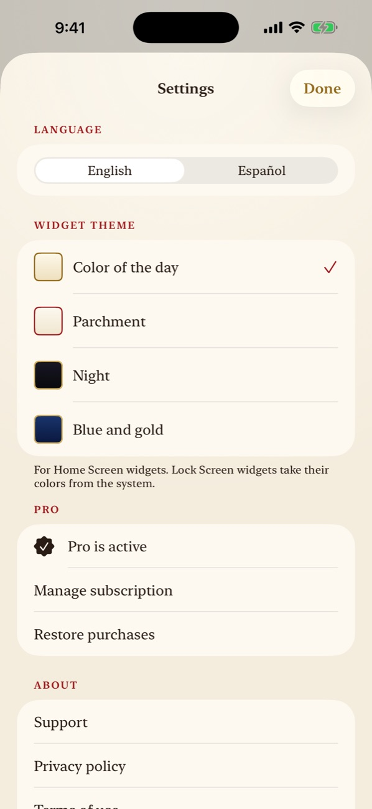

Today
This is what your Home Screen would say right now.
The widget changes by itself every morning: a new verse, the day's celebration, and the color the Church wears today.
Colors of the liturgical year
Green, violet, white, red.
The widget takes the liturgical color of the day, so your Home Screen keeps the seasons of the Church with you.
-
Green · Ordinary Time
Thirty-Third Sunday in Ordinary Time
For even as a man going into a far country called his servants and delivered to them his goods; And to one he gave five talents, and to another two, and to another one, to every one according to his proper ability…
Matthew 25:14-30
-
Violet · Advent and Lent
First Sunday of Advent
Take ye heed, watch and pray. For ye know not when the time is. Even as a man who, going into a far country, left his house and gave authority to his servants over every work and commanded the porter to watch.
Mark 13:33-37
-
White · Christmas and Easter
The Nativity of the Lord (Christmas)
In the beginning was the Word: and the Word was with God: and the Word was God. The same was in the beginning with God. All things were made by him: and without him was made nothing that was made.
John 1:1-18
-
Red · Pentecost, the Passion, martyrs
Pentecost Sunday
Now when it was late the same day, the first of the week, and the doors were shut, where the disciples were gathered together, for fear of the Jews, Jesus came and stood in the midst and said to them: Peace be to you.
John 20:19-23
In the app
The whole day of the Church, at a glance.
- The whole Gospel passage of the day
- The celebration and the liturgical season
- Days of fast and abstinence, and holy days of obligation
- The Rosary mysteries suggested for the day
- The coming days

Themes
Or keep one look all year.
With Pro you can choose one of three more color themes for your Home Screen widgets instead of the color of the day.
- Parchment
- Night
- Blue and gold
Set it up once
A minute today. The Gospel every day after.
Get the app
Free on the App Store, for iPhone and iPad. No account to make.
Touch and hold your Home Screen
Tap Edit, then Add Widget, and search for Catholic Widgets.
Choose a size and add it
That is all. The widget brings a new verse each day.
Free and Pro
Free to use. More with Pro.
Free
The app and the small widget
- Everything in the app
- The small Home Screen widget
- The liturgical color of the day
- No ads, no account
Pro
More widgets and themes
- The medium Home Screen widget
- Lock Screen widgets
- Three more color themes
Yearly, monthly, or a one-time lifetime purchase.
Good to know
- Scripture is from the Douay-Rheims Bible (Challoner revision), in English.
- The app can be used in Spanish. In Spanish it shows the Gospel citation, celebration, season and color of the day; it does not yet include the scripture text in Spanish.
- The calendar, the Gospel citations, and the fast and holy day norms are those of the dioceses of the United States. Other countries and some dioceses keep certain days differently.
- Dates covered: 2026 through 2028.
- Catholic Widgets is an independent app. It is not published or approved by the Holy See, the United States Conference of Catholic Bishops or any diocese.